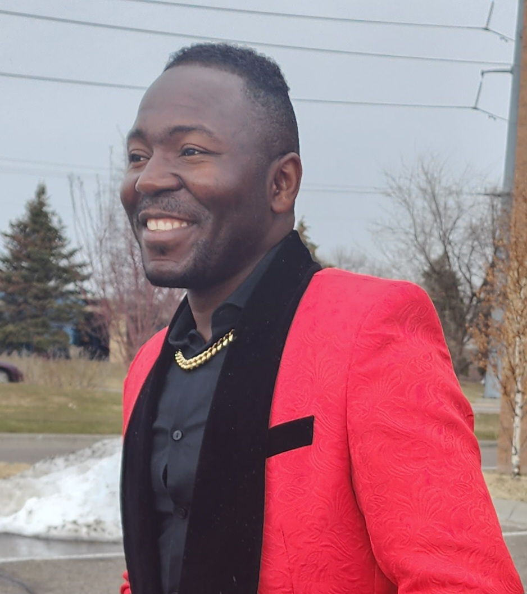

<html>
<head>
<style>
body {background-color: powderblue;}
h1   {color: orange;}
p    {color: red;}
</style>
</head>
<body> 
</body>

<htlm>
    <head>
    <body>
        <title>Resume Page</title>
    </body>
</head>
    <h1>
        <h1><center> 

                <header> Jerry Nyumah </header>
                <header>  Address: 11701 Central Park Way, </header> Maple Grove MN 55369.
                <header> Phone: +17634479396.</header>
                <header> Email: nuchchelsea@yahoo.com,</header> nuchchelsea95@gmail.com</center></h1>

                    

    </header>

    <h1><center>My Resume</center></h1>
    <h2><strong> <center>Career Summary</center>
    
     </h2>
    <p>
    <ul>
<li>Passionate Restoration Technician with 3+ years experienced performing
    exceptional</li> tasks on residential and large commercial projects nationwide with
Service Master. </li>
<li>With my expertise and training in this field, </li>I contributed
    immensely to the company growth and success.</li>
<li>2 years of skills in operating a plastic molding machine/plastic extrusion
    machines,</li> high skills, and safety procedure in operating a sit up forklift. </li>
    <li>2+ years knowledge in warehousing </li> and production/manufacturing, packaging, and delivery.
    </ul>
<h2><strong> <center>Experience</center></strong></h2>

    04/2021 to Current
       <ol>DIRECT SUPPORT PROFESSIONAL(DSP) and BEHAVIORAL
TECHNICIAN Bridges MN, Lino Lake.
<h2><strong> Duties and Responsibilities </strong> </h2>
<ul>
    <li>Assisting individuals with daily living functions.
    <li> Assisting individuals with bedtime routines, administering medications etc.
    <li>Supporting individuals in preparing meals and/or snacks.
    <li>Supporting individuals in cleaning and laundry.
    <li>Assisting individuals in accessing the community and participating in
    recreation and leisure activities.
    <li>Using de-escalating techniques to calm high behavior clients when agitated.
    <li>Maintain a clean and healthy environment.
<li>Document any changes in clients conditions in the client chart and
communication log. Report these changes to the Residential Supervisor.
<li> Completes incident reports according to policy.
<li> Understands procedures regarding home care tasks and charting procedures
when performing these tasks.
<li> Recognizing abnormal signs and symptoms or changes in clients condition.
<li>Documenting duties completed with clients on the service delivery record
during each shift.
</ul>
<h3><strong>EDUCATION</strong>
<ul>
    Current:
    <li>Studying Application Development, Summit Academy OIC.
    20 weeks Certification Program</li>
07/2021
<li>BRADLEY FIGHTING VEHICLE SYSTEM MANTAINER. DIPLOMA. FORT BENNING, GEORGIA</li>
07/2020 To 2021
<li>SYSTEM SUPPORT ADMINISTRATOR, ASSOCIATE RASMUSSEEN COLLEGE, BROOKLYN
    PARK CAMPUS.</li>
10/2019
<li>OSHA CERTIFICATION.</li>
30 HOUR GENERAL INDUSTRY SAFETY AND HEALTH
11/ 2010
<li>HIGH SCHOOL DIPLOMA, VOINJAMA MULTILATERAL HIGH SCHOOL. LIBERIA, WEST
    AFRICA</li>
Obtained regular high school courses.
</ul>
    <p> 
    <h1><center><strong>Link to other websites</strong></center></h1>
    <a href="url"> <center>https://www.indeed.com/</center></a>
        </ol>   
 <htlm>
    </p>
   
  </body>

</htlm>